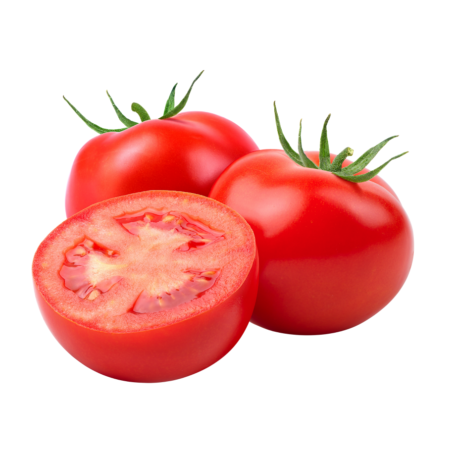

Domaći kečap jednostavan je umak koji možemo pripremiti od svježih rajčica
i nekoliko osnovnih začina.
Najbolji rezultat dobit ćemo ako
koristimo zrele i mesnate rajčice
Za kečap su odlične mesnate sorte poput Roma i San Marzano. Možemo koristiti i sortu Volsovsko srce, ali će tada umak možda trebati nešto duže kuhati.

Više informacija o uzgoju rajčica možete pronači na internetu
Dobar kečaš treba imati izražen okus rajčice, odgovarajuću gustoću i uravnotežen odnos slatkog i kiselog okusa.
Recept je prolagođen za približno 2kg rajčica. Temperatura kuhanja ne mora biti visoka, važnije je postupno isparavanje vode.
Za osnovni omjer možemo koristiti:
2 kg rajčica + 50 ml octa + 2 žlice šećera
Kiselost možemo izraziti pomoću pH vrijednosti: pH manje od 45
Kod nekih recepata koristi se i omjer soli od približno 1% ukupne mase sastojaka.
Ako želite jači okus, možete dodati malo čilija.
Ako želite blaži
kečap, smanjite količinu octa i začina.